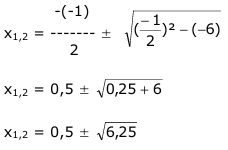

Aufgabe 157 2 * lgx = lg(x + 6) lgx2 = lg(x + 6) Entlogarithmieren: x2 = x + 6 | -x x2 - x = 6 | -6 x2 - x - 6 = 0 p = -1 ; q = -6  x1,2 = 0,5 ± 2,5 x1 = 0,5 + 2,5 = 3 x2 = 0,5 – 2,5 = -2 Keine Lösung, der Logarithmus einer negativen Zahl existiert nicht.